Krankenhaus
Bürgerhospital
Trockenbaukonstruktionen, Revisionsöffnungen sowie Wand- und Deckenverkleidungen im Bürgerhospital, im Eingangsbereich und in den Fluren.

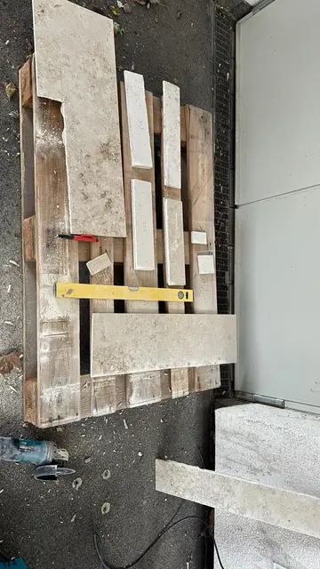

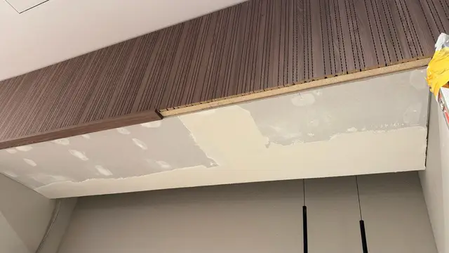
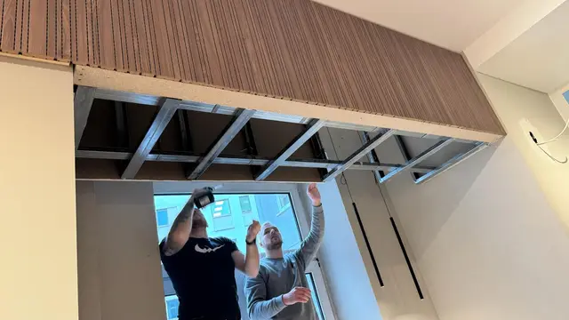
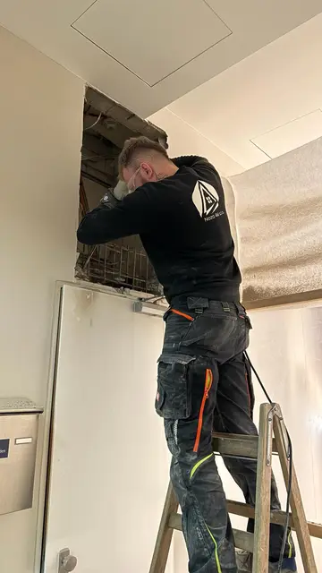
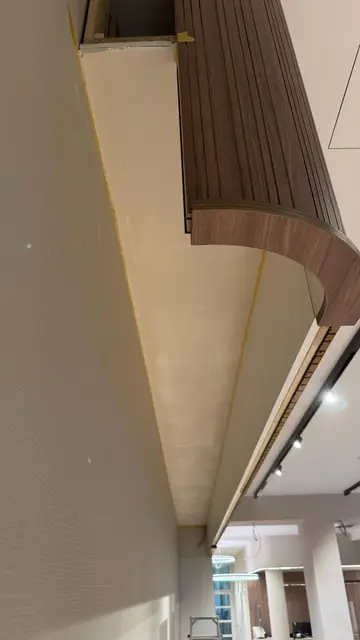
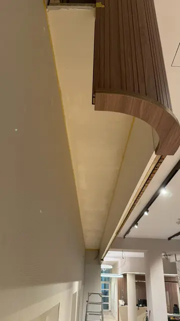


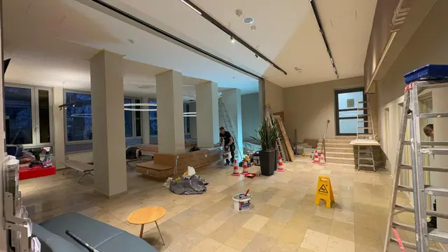
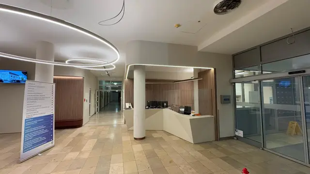
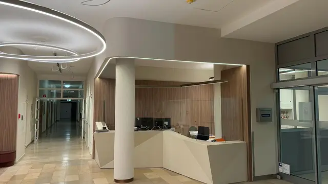
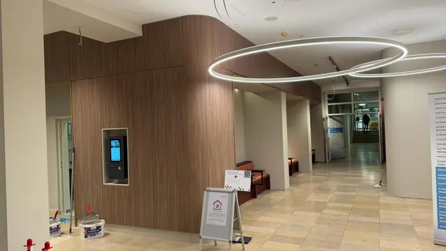


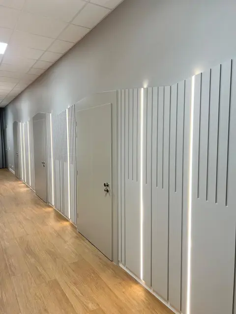


Weitere Referenzen


Sie haben ein ähnliches Projekt?
Schicken Sie uns Leistungsumfang, Baustelle und Termin. Wir melden uns zurück.